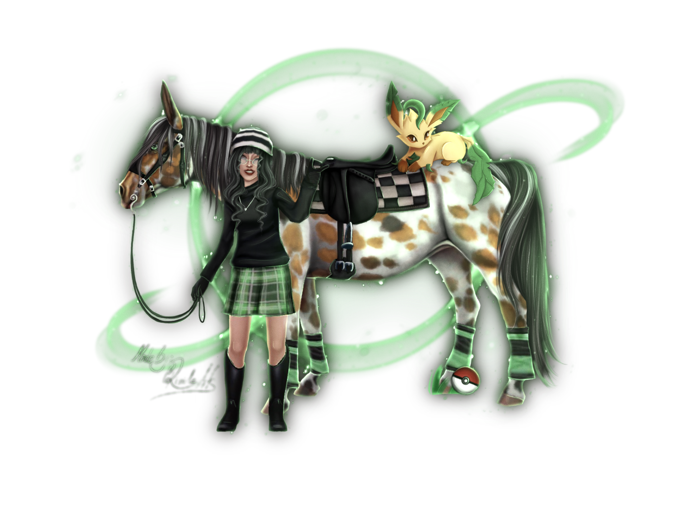

01 · AUSRÜSTUNG
🐴 Unser Pferd
- Dressursattel „Lavendeltraum“
- Barockes Zaumzeug in Schwarz und Silber
- Satteldecke „Londoner Nebel“
- Gamaschen in Grün-Schwarz gestreift
- Echt-weiße Schweifschleife
Unser gemeinsamer Look in Star Stable Online – mit grünem Pokémon-Flair, gepunktetem Pferd und einem ganz besonderen Begleiter.

✦ Unser CluboutfitBei unseren Clubtreffen begleitet uns das gepunktete Maultier! :D
Es gehört zu unserem Clublook einfach dazu und darf bei unseren gemeinsamen Abenteuern natürlich nicht fehlen.